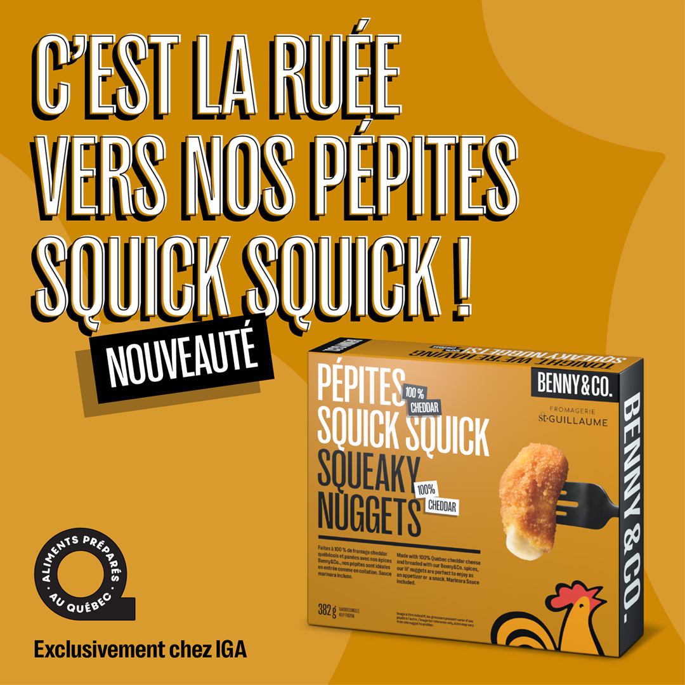

Campaign Execution
Supported campaigns across Quebec and Ontario, including seasonal promotions and product launches.
Marketing Campaigns
At Benny & Co., I supported marketing and public relations initiatives for a growing Quebec restaurant brand with locations across Quebec and Ontario.

This experience combined creative marketing, operational coordination, and data-driven decision-making in a fast-paced brand environment.
My work focused on campaign execution, social media growth, content coordination, and performance analysis across a large franchise network.
Benny & Co. campaigns supported brand awareness, promotions, product launches, and franchise visibility across multiple markets.
Results
Marketing campaigns executed across digital and print channels.
Franchise locations supported through campaign coordination.
Campaign Work
I supported province-wide initiatives across digital, print, and out-of-home channels while coordinating with internal teams, agencies, and franchise stakeholders.
Selected Contributions
Supported campaigns across Quebec and Ontario, including seasonal promotions and product launches.
Contributed to content planning, publishing, and community engagement across brand platforms.
Used campaign, newsletter, and sales data to support marketing decisions across the network.
My Role